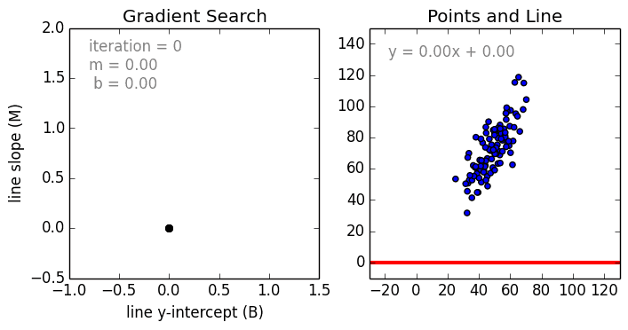
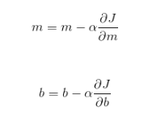

AI/ML - CS 337 Lab - Spring 2019
Lab Assignment 1
Please read the following important instructions before getting started on the assignment.
- This assignment should be completed individually.
- Do not look at solutions to this assignment or related ones on the Internet.
- The files related to the assignment are present in lab1-rollno.zip folder. Extract it and upload it on moodle in the same .zip form after completion.
- Answers of all subjective questions needs to be uploaded in single pdf including all plots and figures including hyperparameters and references, if any.
In this assignment, you will perform Ridge, Lasso Regression and Ordinary Least Squares using the old school method of gradient descent.
Before that lets start with some understanding of basic concepts.
What is Linear Regression?
- It is a supervised machine learning algorithm which learns from given x dependent variable and Y as quantifiable variable and predicts New Y from given new X.
- It works in a way such that it finds the best fit line/plane from the given data.Clearly stated, the goal of linear regression is to fit a line which is best for a set of points. Consider the following graph.

Linear Regression example
(Image source: https://raw.githubusercontent.com/mattnedrich/GradientDescentExample/master/gradient_descent_example.gif)
- To do this we'll use the standard y = mx + b slope equation where m is the line"s slope and b is the line"s y-intercept. To find the best line for our data, we need to find the best set of slope m and y-intercept b values.
What is Gradient Descent?
- Gradient descent is an optimization algorithm used to find the values of parameters (coefficients) of a function (f) that minimizes a cost function.
- To get started with, m and b are randomly initialized. Hence, we get a random line in the beginning. Our goal is to update these values so that the resulting line gives least error.
- We'll use mean squared error as the cost function(J), that calculates the error between the actual value output, and prediction from the hypothesis.
Cost Function = (1/2N) ((mx + b) - y)^2
- This error function is typically convex. In simple terms, we can say that this error function typically has just one minimum (the global minimum).
- When we start with random values of m and b, we get some value of y correspondingly. Error is minimum at the lowest point on this graph, so our goal is to move down the slope to finally reach the bottom-most point.
- The slope of the tangent at any point on a graph is equal to the derivative of the graph w.r.t. input variables.
- Now, as you can see, the slope of tangent at the bottom-most point on the graph is 0 i.e. partial derivatives of J at the bottom-most point are 0.
To get to the bottom-most point, we have to move in the direction of the slope i.e. we"ll update values of m and b, such that we eventually get to the optimum values, where error function is minimum.
- The update equations are

- ere, a is called the "learning rate", and it decides how large steps to take in the direction of the gradient. If the value of a is very small, reaching the optimum value is guaranteed, but it"ll take a lot of time to converge. If a is very large, then the values of m and b might overshoot the optimal values, and then the error will start to increase instead of decreasing.
Hence, learning rate plays an important part in convex optimization.
Standard Gradient Descent Algorithm
(Image source: https://alykhantejani.github.io/images/gradient_descent_line_graph.gif)
What is Ridge Regression?
- Ridge regression uses L2 regularization which adds the following lambda penalty term to the ordinary least square(OLS) equation.
$$ R(w) = {\displaystyle \sum_{i=1}^{n}\left\|y_i - x_ i . w\right\|_{2}^{2}} + \lambda\left\|w\right\|_{2}^{2}$$
- The L2 term is equal to the square of the magnitude of the coefficients.
- In this case if lambda is zero then the equation is the basic OLS but if it is greater than zero then we add a constraint to the coefficients.
- This constraint results in minimized coefficients (aka shrinkage) that trend towards zero the larger the value of lambda. Shrinking the coefficients leads to a lower variance and in turn a lower error value.
Therefore Ridge regression decreases the complexity of a model but does not reduce the number of variables, it rather just shrinks their effect.
What is Lasso Regression?
- Lasso regression uses the L1 penalty term and stands for Least Absolute Shrinkage and Selection Operator. The penalty applied for L2 is equal to the absolute value of the magnitude of the coefficients.
$$ L(w) = {\displaystyle \sum_{i=1}^{n}\left\|y_i - x_ i . w\right\|_{2}^{2}} + \lambda\left\|w\right\|_{1}^{1}$$
- Similar to ridge regression, a lambda value of zero spits out the basic OLS equation, however given a suitable lambda value lasso regression can drive some coefficients to zero.
- The larger the value of lambda the more features are shrunk to zero. This can eliminate some features entirely and give us a subset of predictors that helps mitigate multi-collinearity and model complexity.
- Predictors not shrunk towards zero signify that they are important and thus L1 regularization allows for feature selection (sparse selection).
Data Set
The standard House Price Prediction Dataset With 79 explanatory variables describing (almost) every aspect of residential homes in Ames, Iowa, the challenge is to predict the final price of each home.
There are 1461 number of data points available that have been segregated to training data containing 1200 points and test data containing 261 points.
House Pricing Dataset
(Image source: https://storage.googleapis.com/kaggle-competitions/kaggle/5407/media/housesbanner.png)
Code
The base code for this assignment is available in this compressed file. Below is the list of files present in the Lab1_base directory.
| File Name |
Description |
tasks.py |
This file contains all the required functions that you need to complete. |
utils.py |
This file contains all helper functions that you can use. |
autograder.py |
This is used for testing your tasks 1,2,3. |
The data set is provided in the dataset directory.
Methods you need to implement
You will only have to write code inside the following functions.
-
preprocess: This method takes as input the raw csv extracted data (contains strings, numbers, floats...) output from read_data function and returns the processed data (containing all numerical values). For categorical string data you should use the one_hot_encode function and for other numerical data use following normalisation.
$$ (X_{new_i}) = {\displaystyle \frac{X_{old_i} - \mu(X_{old})}{\sigma(X_{old})}}$$
NOTE: Do not use normalisation for output values
-
ordinary_least_squares : As discussed in class, this is the sum-square error function. Implement this function and minimize the Ordinary Least Squares objective using gradient descent.
-
ridge_grad_descent: This method takes as input training data X and with labels Y along with hyper parameters such as learning rate, max_iterations, $\lambda$, and returns the trained weight vector in form of a numpy array. You can initialize the weights in any way. You have to call function grad_ridge to get the error gradient and update the weight vector according to the ridge loss function.
$$ R(w) = {\displaystyle \sum_{i=1}^{n}\left\|y_i - x_ i . w\right\|_{2}^{2}} + \lambda\left\|w\right\|_{2}^{2}$$
where R(w) is the ridge objective function w.r.t. w and
w is the weight vector and
x_i is i_th data input vector and
y_i is i_th output vector and
n is total number of input points.
NOTE: Remember to follow same convention for matrix dimensions as specified in the comments of the task.py file. Also, you may create global variables and precompute some values to increase the speed of your algorithm.
-
grad_ridge: This method takes as input the train input X, train output Y, $\lambda$ and weight vector W and returns the $\frac{dR(w)}{dw}$.
-
OLS_vs_ridge: This method outputs 1 if the sum of squares error on training data using the weights obtained after minimizing ridge regression objective is greater than or equal to the sum of squares
error on training data using the weights obtained after minimizing the ordinary least squares (OLS) objective, otherwise 0.
The claim "ridge regression SSE is always greater than that of OLS" can be analytically proven as given in Tutorial-2 Q3.
-
coord_grad_descent: This method takes as input train data X and train output Y along with hyper parameters like max_iterations, lambda and returns the trained weight vector in form of a numpy array optimizing the Lasso loss function.
$$ L(w) = {\displaystyle \sum_{i=1}^{n}\left\|y_i - x_ i . w\right\|_{2}^{2}} + \lambda\left\|w\right\|_{1}^{1}$$
where L(w) is the lasso objective function w.r.t. w.
Since the l_1 -regularization term in the objective function is non-differentiable, it is not immediately clear how gradient descent or SGD could be used to solve this optimisation problem directly. One approach to solve such problems is coordinate descent in which at each step we optimise over one component of the unknown parameter vector, fixing all other components. The descent path so obtained is a sequence of steps, each of which is parallel to a coordinate axis. It turns out that for the Lasso optimization problem, we can find a closed form solution for optimisation over a single component fixing all other components. This means that while updating the kth component of the weight vector, solving for $\frac{dL(w)}{dw_k} = 0$ will give the new $w_k$ value.
This gives us the following algorithm known as Coordinate Gradient Descent:
- Initialize weight vector w.
- Repeat until converged/max_iterations :
- For every dimension of input:
- Set $w_k$ = w such that $\frac{dL(w)}{dw_k} = 0$.
NOTE: Technically, you would need to use the subgradient of $L(w)$ as it is non differentiable to solve $\frac{dL(w)}{dw_k} = 0$
Also, solve this equation manually (not by gradient descent), as closed form solution is much faster and easier to compute.
Refer to this link for further clarifications on Coordinate Descent Algorithm

Differences between Ridge and Lasso regression
(Image source: https://qph.fs.quoracdn.net/main-qimg-2a88e2acc009fa4de3edeb51e683ca02.)
Task 1: Preprocessing (1 Mark)
In this task, you will complete the preprocess function in task.py file. To test your code, run the following command.
python3 autograder.py 1
Task 2: Ordinary Least Squares (0.5 Mark)
In this task, you will the complete the ordinary_least_squares(OLS) function used in Task 3 in task.py file.
a) Does closed form solution exists for OLS? If no, explain with reasons.
b) How do you explain the solution obtained from gradient descent ? (Extra Credit : 1 marks)
Task 3: Ridge regression (1.5 + 0.5 + 1 Marks)
In this task, you will complete the ridge_grad_descent and grad_ridge function in task.py file. You are free to change the default parameters like learning rate, epsilon, max_iter as you wish (as long as it passes autograder). To test your code, run the following command.
python3 autograder.py 3
If ridge regression leads to greater error than ordinary least squares regression, then why should one be interested in ridge regression at all?
Note: How would you augment the data X and the corresponding Y such that ridge(X,Y, $\lambda$ ) gives same weights as Linear(X_new, Y_new) for positive $\lambda$ . Also, plot the graph between $\|w\|^2$ and $\lambda$ using plot_norm2 function and save it as ridge_weights.png. Explain in pdf, the nature of the plot and reason behind it mathematically.
Task 4: Lasso Regression (2 Marks)
In this task, you will complete the coord_grad_descent function in task.py file. Make sure to write efficient code for this task (i.e 2000 iterations should take less than a min) for doing a fast cross validation. You are free to change the default parameter max_iter as you wish (as long as it passes autograder). To test your code, run the following command.
python3 autograder.py 4
Task 5: Observations (1.5 Marks)
In this task, answer the following question.
Q.1 What do you consider to be the five most important features that contributed to your predictor's performance? Explain your answer within including why you chose the features listed. You can use plots to support your statements further.
Q.2 What are the difference between important features obtained from Lasso and Ridge regression. You can use plots to support your statements further.
Task 6(2 marks):
In gradient descent, learning rate is an important parameter. However, it is not guaranteed to converge to global minima always. Try with different learning rates while executing ridge and lasso regression.
Comment on the folowing questions with supported plots:
a) Experiment with different learning rate and plot a graph with execute_time vs learning_rate. X-axis represents learning rate and Y-axis represents execution time. For this task you need to choose proper values of learning rate that support the convergence.
b) Plot a graph between learning_rate(X-axis) and observed_error(Y-axis). Do you observe change in error with respect to learning rate? Explain it with suitable reason ?
Submission
You are expected to work on this assignment by yourself. You may
not consult with your classmates or anybody else about their
solutions. You are also not allowed to look at solutions to this assignment or
related ones on the Internet. You are allowed to use resources on the
Internet for programming (say to understand a particular command or a
data structure), and also to understand concepts (so a Wikipedia page
or someone's lecture notes or a textbook can certainly be
consulted). However, you must list every resource in the references section you have
consulted or used in the pdf,
explaining exactly how the resource was used. Failure to list all
your sources will be considered an academic violation.
In task.py, you will have to fill out functions for all the tasks specified.
In the pdf file, you will report the parameters (learning rate, max_iteration, lambda used) for lasso, ridge that was used to obtain your min loss on test data.
For answering subjective questions, create a pdf file with name lab1-rollno.pdf. Include all plots and comments in the single pdf file. Do not store your plots in any other folder for, include all figures in single pdf file.
Remember to test your solution before submission using the autograder provided.
python3 autograder.py [task_num]
where task_num can be one of {1,2,4}.
Place these files in a directory (lab1-rollno), and compress it to be lab1-rollno.zip where rollno is your roll number and upload it on Moodle under Lab Assignment 1.